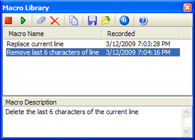

Macro Library |
  
|
Macro Library |
|
The IDE's code editor has a built-in keyboard macro facility, but there is a limitation that it can only store a single macro and that macro is lost when the IDE exits. The GExperts Macro Library allows you to save and later playback an unlimited number of keyboard macros in future IDE sessions.
To begin recording a macro, press the record toolbar button. Then, begin typing your editor keystrokes. When you are done recording the macro, use the record button to stop recording. At that point, the Macro Library windows should add your new macro to the window with the current date and time as the timestamp. You can then give the macro a name and a long description. All of the listed macros will be automatically saved to an XML file called MacroLibrary.xml. Delphi 7 and later also have the ability to automatically add all editor recorded macros to the library, without using the record toolbar button (you can start/stop recording by pressing Shift+Ctrl+R with the default editor keymapping). This feature can be turned off using the Pause button in the toolbar.
To playback a macro, first place the editor cursor in the desired location, and then press the playback button, double-click the macro, or use the copy toolbar button and press Shift+Ctrl+P to execute the macro as many times as you need.
Once you are done using a macro, you can delete it using the delete button or clear all of the macros at once.
If you want to share individual macros with other systems, you can use the save and load buttons to save or load individual macros to a file. To share all of your macros, you can exit the IDE and then copy the entire MacroLibrary.xml to another computer.
Note: It is the IDE that implements the actual recording and playback of macros. You should find that it properly records and plays back most standard editor keystrokes (arrow/movement keys, letters/numbers/symbols, block selection) and some types of menu item selections, but certain other types of IDE actions (creating new event handlers from the designer or object inspector , etc.) can not be recorded or played back.
